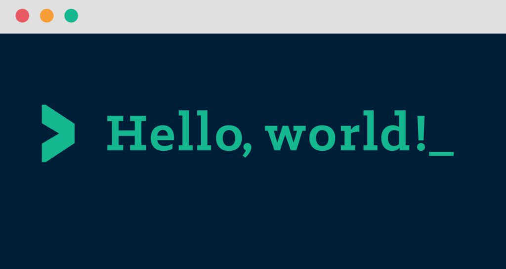

Hello, world!#
Time to create your very first Python program! The traditional first program in any programming language is called “Hello, world!” and it simply displays the text “Hello, world!” on the screen.
Any Python program is just a text file with a .py extension. You can create this file using any text editor, but since we have VS Code installed, we’ll use that. Assuming that you have the learning folder open in VS Code, you can start by creating a new file.
In VS Code, go to the menu bar and select File > New File or use the shortcut (Ctrl + N). Then, save the file by going to File > Save As… or using the shortcut (Ctrl + S). Name the file hello.py and make sure to save it in the problems folder.
The command to display test to the user in Python is print(). Inside the parentheses, you put the text you want to display, enclosed in quotation marks. You can single or double quotes as long as you’re consistent.
Open the hello.py file you just created and type the following code:
print("Hello, world!")
Now that you’ve written your first Python program, it’s time to run it! You can run Python programs directly from the terminal in VS Code.
From the terminal window in VS Code, make sure you’re in the learning_to_code directory. If you’re not sure, you can type pwd to print the current directory path.
Then, navigate to the problems folder by typing:
cd problems
Now, to run the hello.py program, type the following command:
python hello.py
You should see the output:
Hello, world!
Congratulations! You’ve just written and run your first Python program 🎉

A mini task for you#
Now try to modify the program to print the name of your favourite coding instructor instead of “world” (hint: there’s a correct answer to who that is).
Remember to save the file before running it again!